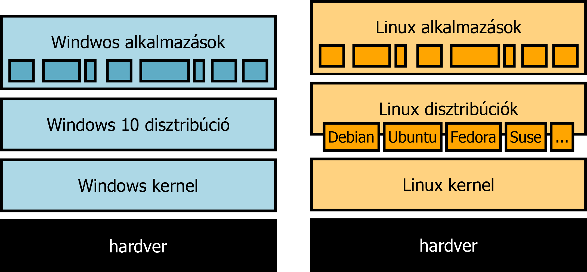
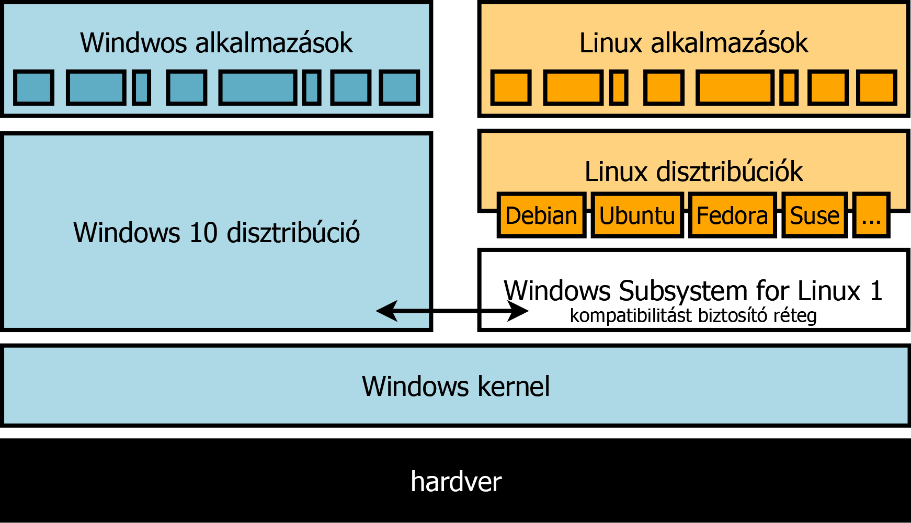
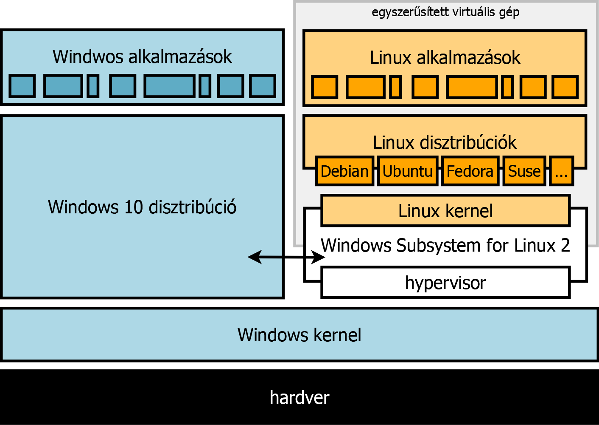

WSL nélkül

WSL 1

WSL 2

Vezérlőpult > Programok > Windows szolgáltatások be- és kikapcsolása > Linuxos Windows-alrendszer és Virtuális gép platformja (WSL2-höz)
Microsoft Store > Keresés: "linux" > distribúció választása > telepítés
Ennek a Linux disztribúciójának a fájlrendszerében...
Van-e kapcsolat/átjárás a különböző disztribúciók között? Próbáljuk ki! (Debián telepítése, ...)
/mnt/c... (df -h)
Nézzük meg milyen folyamatok futnak egy "teljes" és egy WSL Linux környezetben. Hasonlítsuk össze a korábban telepített VM gép folyamataival htop segítségével. (minimalista telepítés)
Környezet verziójának lekérdezése: more /etc/os-release
Kernel verziójának lekérdezése: cat /proc/version Updating the WSL 2 Linux kernel Installation Instructions for WSL 2
WSL környezetek/disztribúciók listázása: wsl -l -v
WSL környezetek/disztribúciók verziójának módosítása: wsl --set-version milyiket? mire?
megbeszélés: oktatásban, munkában, magán célra?